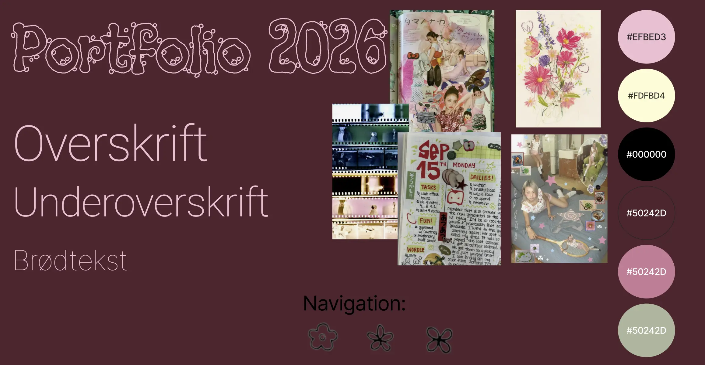
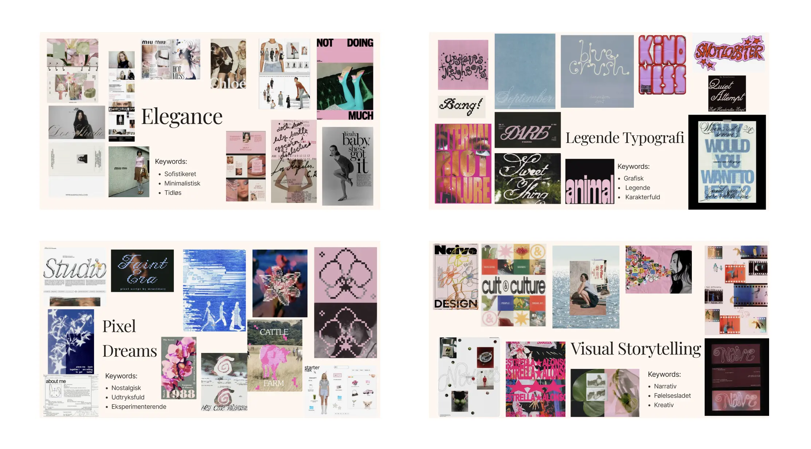

Portfolio
Tema 6 er portfolioeksamen og fungerer som afslutningen på 1. semester. I dette tema udviklede jeg den portfoliohjemmeside, som du læser nu. Formålet med portfolioen var at samle mine projekter, min læring og mine refleksioner fra hele semesteret i én samlet løsning.
Gennem arbejdet med portfolioen har jeg haft mulighed for at anvende mange af de værktøjer, metoder og teknologier, jeg har lært på uddannelsen. Jeg har arbejdet med både design, frontend-udvikling, indholdsstruktur og brugeroplevelse for at skabe en hjemmeside, der præsenterer mit arbejde på en overskuelig og brugervenlig måde.
Min løsning
Jeg har udviklet denne hjemmeside fra bunden ved hjælp af HTML, CSS og JavaScript. Sitet består af en forside, en portfoliosektion med mine projekter fra 1. semester samt en Om mig-side, der præsenterer min baggrund og mine interesser.
I udviklingsprocessen havde jeg fokus på at skabe et portfolio, der afspejler mig som person og samtidig præsenterer mit arbejde på en overskuelig og brugervenlig måde. Derfor undersøgte jeg forskellige portfoliohjemmesider for inspiration og arbejdede med struktur, navigation og visuel identitet, inden jeg begyndte at kode løsningen.
Designet blev udviklet med udgangspunkt i de metoder og principper, jeg har lært gennem semesteret, herunder mobile-first, responsivt design, visuel hierarki, navigation og brugervenlighed. Undervejs testede og justerede jeg løbende designet for at sikre, at indholdet var let at finde og forstå.


Min læring
Tema 6 gav mig mulighed for at samle og reflektere over det sidste halve år på uddannelsen. Det har været en værdifuld proces, fordi man hurtigt kan glemme de projekter og erfaringer, man har gjort sig tidligere på semesteret.
Gennem arbejdet med portfolioen fik jeg mulighed for at vende tilbage til mine tidligere projekter og reflektere over, hvad jeg faktisk har lært undervejs. Det gjorde mig mere bevidst om min faglige udvikling og gav mig et bedre overblik over, hvordan mine kompetencer inden for design, brugeroplevelse og frontend-udvikling har udviklet sig gennem semesteret.